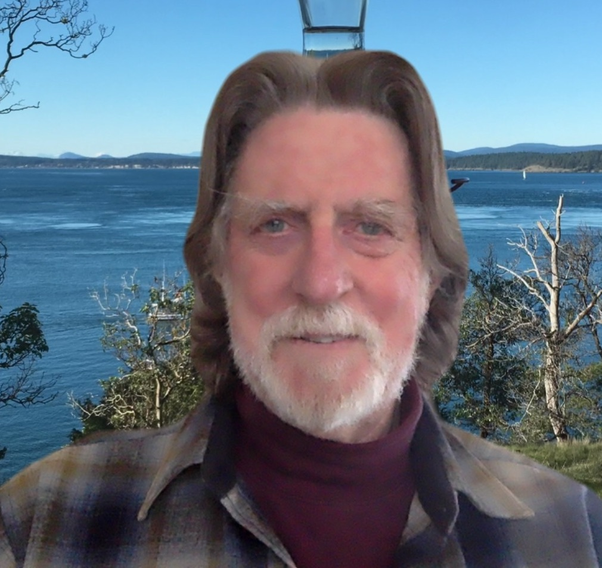

John Delaney became Professor Emeritus at the University of Washington after 42 years of active research and teaching in Ocean Sciences. Early career experiences involved working in the late 1960’s as an economic geologist across the western US, searching for base and precious metal deposits, and spending six months in the early 1970’s working on and within the active volcanoes in the western Galapagos Islands.
In 1987, Delaney initiated the NSF-sponsored “RIDGE” Program by working with many colleagues to focus on Mid-Ocean Ridge (MOR) systems from the perspective of feedback loops linking physical, chemical, and biological processes within dynamic submarine systems. RIDGE soon expanded into “Inter-RIDGE” (international), which continues today, and is being run by the French as of 2020.
Having made many tens of dives with the deep submersible ALVIN, and after nearly 50 sea-going expeditions, Delaney began working with colleagues to launch a program, with NSF support, focused on gaining long-term, real-time access to myriad processes operating at, below, and above the seafloor off the coasts of Washington and Oregon. This effort involved implementing a tectonic plate-scale installation of submarine, electro-optically cabled sensor networks across the Juan de Fuca Plate as part of NSF’s Ocean Observatory Initiative. By 2021, that Cabled Array had been operating for half a decade. It provides continuous, real-time data and imaging information to researchers and educators alike on many processes operating along and above the JdF Ridge and the Cascadia Subduction Zone.
Delaney has long been interested in the search for life elsewhere in the solar system, and worked with NASA-JPL folks to help plan space missions to the moons of Jupiter. He is a Fellow of the American Geophysical Union, a recipient of AGU’s Athelstan Spilhaus Award for fostering public engagement in the excitement, significance, and beauty of Earth and Space Science.
A late-stage focus of Delaney’s career has become the “Global Ocean-Human Culture” array of Themes involving elaboration of the broad, interlinked spectrum of ways that human beings have used, and been impacted by Oceans for tens of millennia. The goal is to fundamentally expand public awareness of how crucial the ocean-systems are to the long-term well-being of all of humanity from environmental, economic, security, and discovery perspectives.
Sulc’s penguin research contributed to her senior thesis in oceanography, looking at phytoplankton productivity in relation to penguin foraging patterns. She completed an honors thesis for her French major as well, working with Professor Geoffrey Turnovsky. Sulc wrote a series of computer scripts in Python, a programming language, to extract names mentioned in correspondence. Using this data, she was able to generate a digital map of the literary circles that had long fascinated her. The digital humanities methods Sulc used for her research were similar to those she uses in the sciences. “I started looking at the literary circles as if they were an ecosystem, studying the different levels and interactions between people in the same way I would study predators and prey,” she says.
From summit to seafloor - Friedrich is passionate about using modern data science techniques to better understand the ever changing state of Earth's hydrosphere and its fate as the fundamental life support system on Earth. Prior to embarking on a PhD at University of Washington, Friedrich spent three years at Rutgers University working with UW's Applied Physics Lab to evaluate data streaming from the RSN Cabled Array, a distributed seafloor sensor network delivering real-time insight into geological, physical, chemical, and biological processes occurring in the ocean at this very moment. His current PhD research focuses on looking back in time, by reconstructing the 3D evolution of mountain glaciers in response to climate forcing, using historical aerial photography and satellite imagery collected over the past century.
Steve Sewell has more than twenty-five years’ experience in the marine transportation industry. He served in several executive management positions at the Port of Seattle including eight years as Managing Director of the Seaport. In that role, Steve oversaw container, breakbulk and bulk shipping operations, cruise, warehouse, recreational boating and commercial fishing facilities. After leaving the Port, he spent twelve years in the private sector, including time as president of one of the largest dedicated maritime engineering companies, and seven years at a subsidiary of the world’s largest container port operator. He also spent two years as the State of Washington Governor’s first maritime sector lead. Steve remains active consulting and volunteering in support of the maritime industry.